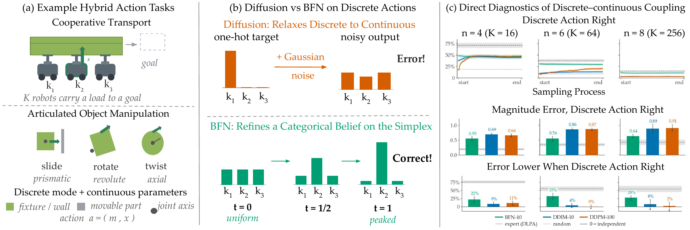
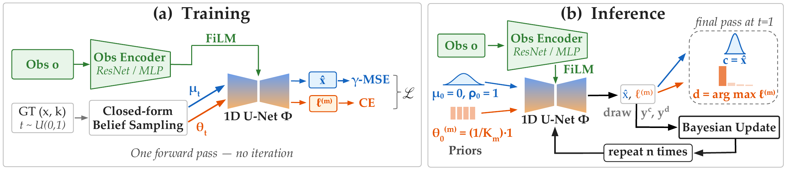
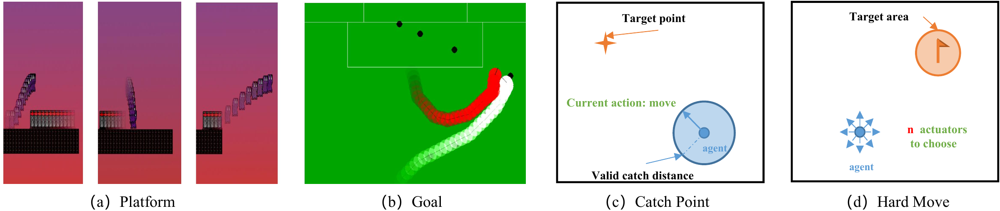
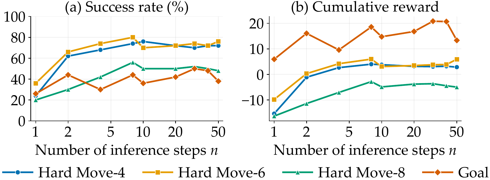
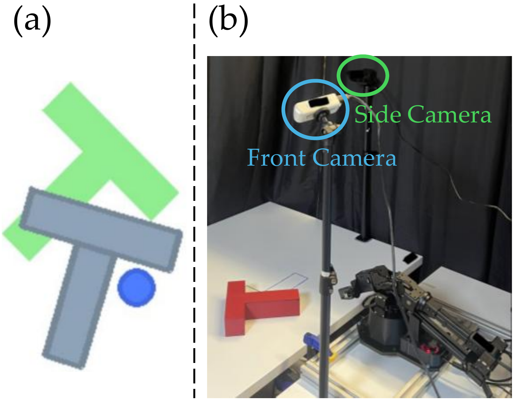
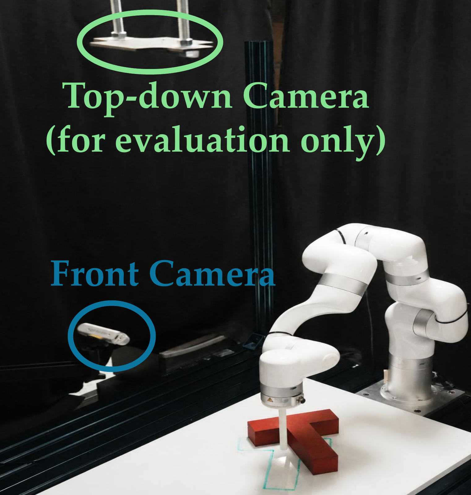

Anonymous Authors · Under Review

Figure 1. BFN Policy for hybrid action spaces. (a) Hybrid actions couple a discrete mode m with continuous parameters x. In cooperative transport m selects which robot to adjust and x the force it applies; in articulated-object manipulation m is the joint type and x its magnitude. (b) Diffusion Policy relaxes the discrete mode to a one-hot vector and adds Gaussian noise, producing corrupted targets outside the simplex and requiring argmax decoding. BFN Policy refines a categorical belief that remains on the simplex, from a uniform prior at t=0 to a peaked posterior at t=1. (c) Inside the sampler on Hard Move. Top: how often the discrete action would be right if the policy committed at that point of sampling. Middle: magnitude error when the discrete action is right. Bottom: how much lower that error is than when it is wrong; 0 means the magnitude is predicted independently of the discrete choice.
Diffusion Policy achieves state-of-the-art imitation learning, but remains limited for real robots because it assumes continuous action spaces and requires many denoising steps for inference. Many manipulation tasks instead require real-time hybrid actions that couple discrete modes with continuous parameters, as formalized in Parameterized Action Markov Decision Processes (PAMDPs). Existing diffusion methods handle such actions by relaxing discrete choices into continuous variables and rounding after denoising, which pushes samples off the probability simplex and weakens discrete–continuous coupling. Faster variants such as DDIM and Consistency Policy reduce inference cost, but inherit the same Gaussian, continuous-only formulation.
We introduce BFN Policy, the first Bayesian Flow Network (BFN)-based imitation-learning policy for hybrid actions. BFN Policy casts action generation as structured posterior inference in belief space, using unified Gaussian and categorical conjugate updates rather than denoising in data space. This keeps intermediate distributions valid, preserves discrete–continuous dependencies without relaxation or rounding, and supports adjustable test-time inference budgets without distillation. Across eight PAMDP benchmarks, real-world hybrid Push-T, and simulated continuous Push-T, BFN Policy outperforms state-of-the-art diffusion policies on hybrid tasks, matches Diffusion Policy on continuous control, and runs at DDIM-level cost, roughly 8× faster than DDPM.
The agent emits an action a = (d, c) with M discrete sub-actions and continuous parameters coupled to those choices. BFN Policy maintains a belief over the action and sharpens it with Bayesian updates. A Gaussian prior meeting a Gaussian message stays Gaussian, so precision adds exactly. A categorical belief θ = softmax(η) receives a message that is additive in η, so the belief never leaves the simplex: no relaxation, no rounding. Training never simulates the recursion, because the belief at any time has a closed-form marginal.

Figure 2. BFN Policy overview. (a) During training, ground-truth actions and a random time produce belief parameters in closed form, with no iteration. A single 1D U-Net conditioned on the encoded observation via FiLM predicts the clean continuous action and the discrete logits; the loss is γ-weighted MSE plus unweighted cross-entropy. (b) At inference the beliefs start from uninformative priors and are refined over n conjugate updates, each drawing a sender observation from the network's predictions and folding it back through the Bayesian update. A final pass at t=1 reads off the action.
| BFN Policy (ours) | Diffusion Policy | |
|---|---|---|
| Network input | Belief params (μ, θ) | Noisy sample at |
| Prediction target | Clean action + logits | Noise ε̂ |
| Update rule | Conjugate Bayesian | Iterative denoising |
| Discrete actions | Native (categorical flow) | Relaxation + arg max |
| Action dependency | Joint, on the simplex | Joint, in relaxed space |
| Step flexibility | Exact for any n | Degrades at small n |
Table I. Both share identical encoders, U-Net backbones and projection widths; only the generative formulation differs.
Q1

Figure 3. PAMDP benchmarks. Each task requires selecting a discrete action type together with its continuous parameters. (a) Platform: reach the goal while avoiding enemies and gaps, choosing run, hop or leap with a continuous displacement. (b) Goal: shoot the ball past the keeper via kick-to(x,y), shoot-left(h) or shoot-right(h); Hard Goal splits the shot into ten actions along the goal line. (c) Catch Point: move in a continuous direction or catch the target. (d) Hard Move: toggle n actuators on or off (2n combinations) and scale the composite displacement.
| Task | Demos | DLPA (expert) | Consistency-1 | Consistency-3 | DDPM-100 | DDIM-10 | BFN-10 | BFN-20 |
|---|---|---|---|---|---|---|---|---|
| Platform | 494 | 98.8 ± 1.0 | 0.0 ± 0.0 | 0.0 ± 0.0 | 98.0 ± 3.9 | 100.0 ± 0.0 | 100.0 ± 0.0 | 96.0 ± 5.4 |
| Catch Point | 401 | 80.2 ± 3.5 | 0.0 ± 0.0 | 2.0 ± 3.9 | 84.0 ± 10.2 | 78.0 ± 11.5 | 88.0 ± 9.0 | 88.0 ± 9.0 |
| Goal | 231 | 46.2 ± 4.4 | 0.0 ± 0.0 | 0.0 ± 0.0 | 22.0 ± 11.5 | 8.0 ± 7.5 | 40.0 ± 13.6 | 44.0 ± 13.8 |
| Hard Goal | 222 | 44.4 ± 4.4 | 0.0 ± 0.0 | 0.0 ± 0.0 | 20.0 ± 11.1 | 14.0 ± 9.6 | 22.0 ± 11.5 | 22.0 ± 11.5 |
| HM-4 | 374 | 74.8 ± 3.8 | 14.0 ± 9.6 | 8.0 ± 7.5 | 60.0 ± 13.6 | 54.0 ± 13.8 | 74.0 ± 12.2 | 74.0 ± 12.2 |
| HM-6 | 370 | 74.0 ± 3.8 | 2.0 ± 3.9 | 2.0 ± 3.9 | 12.0 ± 9.0 | 10.0 ± 8.3 | 76.0 ± 11.8 | 78.0 ± 11.5 |
| HM-8 | 279 | 55.8 ± 4.4 | 2.0 ± 3.9 | 2.0 ± 3.9 | 2.0 ± 3.9 | 2.0 ± 3.9 | 56.0 ± 13.8 | 56.0 ± 13.8 |
| HM-10 | 132 | 17.0 ± 7.4 | 2.0 ± 3.9 | 2.0 ± 3.9 | 2.0 ± 3.9 | 4.0 ± 5.4 | 16.0 ± 10.2 | 18.0 ± 10.6 |
| Inference (ms) | – | – | 12.2 ± 0.3 | 33.2 ± 0.3 | 1063.3 ± 24.2 | 106.8 ± 2.1 | 132.5 ± 2.9 | 253.0 ± 5.5 |
| NFE | – | – | 1 | 3 | 100 | 10 | 11 | 21 |
Table II. Success rate on PAMDP benchmarks. HM-n denotes Hard Move with n actuators (2n discrete combinations). Mean ± 95% CI over 50 episodes; best among learned policies in bold.
BFN Policy leads every generative baseline and largely matches the expert. BFN-20 attains the highest mean among learned policies on 7 of 8 tasks, with CIs overlapping DLPA's; Hard Goal is the only genuine gap.
Diffusion baselines collapse as discrete cardinality grows, and Figure 1(c) shows why. On Hard Move, DDPM and DDIM lose most of their success rate by n=6 and are at chance by n=8, while BFN Policy degrades gracefully, tracking the expert's own decay. Three rows isolate the cause. Top: the baselines build their discrete decode up over sampling and at n=8 never leave chance, whereas BFN Policy's is set by the first network pass and unchanged thereafter (11% against an expert 15%). Middle: where they do decode correctly, their magnitude error rises with K to 0.86–0.91 against BFN Policy's 0.55–0.64. Bottom: BFN Policy's error is 22–33% lower when its discrete action is right, as the expert's is (55–76%), whereas the baselines' 0–11% has CIs through zero at n≥6: their magnitude ignores the action they chose.
Distillation does not rescue few-step hybrid sampling, but BFN Policy needs none. Consistency Policy is near zero everywhere: distillation cannot recover a teacher weakened by relaxation. BFN Policy instead reduces NFE for free — BFN-10 matches BFN-20 within CI on every task, at DDIM-comparable latency and 8× faster than DDPM.

Figure 5. Step-count flexibility. Success rate (a) and cumulative reward (b) versus inference steps n for a single checkpoint per environment, without retraining. Performance holds from n=50 down to n≈10 and collapses only at n=1. Mean over 50 episodes.
Q2

Figure 4. Push-T evaluation. (a) simulated Push-T; (b) the WidowX hardware setup. The action is a purely continuous 2-D target position, so BFN Policy reduces to the Gaussian belief flow and, dropping the γ-weighting, shares the Diffusion Policy objective exactly — leaving belief space as the only difference.
| Method | NFE | Simulation | WidowX (real) | ||
|---|---|---|---|---|---|
| Max coverage | Inference (ms) | IoU (last frame) | Inference (ms) | ||
| Consistency-1 | 1 | 0.81 ± 0.10 | 9.71 ± 0.01 | 0.29 ± 0.11 | 15.50 ± 0.57 |
| Consistency-3 | 3 | 0.81 ± 0.09 | 23.51 ± 0.01 | 0.36 ± 0.13 | 33.00 ± 0.38 |
| DDPM-100 | 100 | 0.95 ± 0.04 | 660.31 ± 0.18 | 0.82 ± 0.05 | 815.63 ± 3.18 |
| DDIM-10 | 10 | 0.96 ± 0.04 | 68.55 ± 0.27 | 0.85 ± 0.03 | 89.76 ± 6.80 |
| BFN-10 | 11 | 0.84 ± 0.07 | 63.50 ± 0.01 | 0.83 ± 0.02 | 90.32 ± 0.46 |
| BFN-20 | 21 | 0.92 ± 0.06 | 120.60 ± 0.98 | 0.88 ± 0.03 | 167.11 ± 0.57 |
Table III. Continuous Push-T results. Mean ± 95% CI over 50 (simulation) and 15 (real) rollouts.
In simulation, BFN Policy matches the diffusion baselines within statistical noise. BFN-20's coverage falls inside the CIs of both DDPM-100 and DDIM-10. At matched steps DDIM-10 leads BFN-10 by a clear margin, but doubling to 20 steps closes it, at a per-call cost still well below DDPM-100.
BFN Policy converts extra steps into accuracy where Consistency Policy does not. Consistency is unchanged from 1 to 3 steps, capping well below BFN Policy despite its lower latency and an extra distillation stage.
On hardware BFN Policy leads outright. BFN-20 attains the highest IoU, above both DDIM-10 and DDPM-100 at 5× less compute than the latter, and BFN-10 already matches DDIM-10 within CI. The consistency baselines lose roughly half their performance from simulation to hardware while all other methods lose little, suggesting distilled few-step samplers are the least robust to real-world visual and dynamics shift. That BFN Policy trails slightly in simulation yet leads on hardware indicates its hybrid formulation costs nothing on purely continuous control.
Q3
We keep the Push-T setting but make the action hybrid: a discrete push direction out of eight cardinal and diagonal unit vectors, paired with a continuous distance. This mirrors how a teleoperator pushes, committing to a direction before choosing how far, and makes the coupling explicit: the same distance is correct or catastrophic depending on the direction.

Figure 6. Real hybrid Push-T setup. The front camera provides policy observations; the top-down camera is used for evaluation only.
| Method | NFE | IoU | Inference (ms) | Duration (s) |
|---|---|---|---|---|
| Consistency-1 | 1 | 0.30 ± 0.10 | 6.52 ± 0.55 | 98.46 ± 3.34 |
| Consistency-3 | 3 | 0.23 ± 0.09 | 6.54 ± 0.55 | 99.95 ± 2.97 |
| DDPM-100 | 100 | 0.39 ± 0.14 | 259.20 ± 0.64 | 119.08 ± 10.51 |
| DDIM-10 | 10 | 0.38 ± 0.11 | 29.33 ± 0.46 | 107.71 ± 3.77 |
| BFN-10 | 11 | 0.42 ± 0.11 | 29.55 ± 0.55 | 90.48 ± 10.30 |
| BFN-20 | 21 | 0.48 ± 0.11 | 53.58 ± 0.53 | 110.25 ± 16.86 |
Table IV. Real hybrid Push-T results. Mean ± 95% CI over 20 rollouts.
The hybrid-action advantage transfers to real hardware. BFN-20 attains the highest IoU, and BFN-10 leads DDIM-10 at matched NFE while edging DDPM-100 at one-tenth its NFE. The CIs overlap at 20 rollouts, but the ranking reproduces simulation, indicating that a structured posterior over the coupled direction and distance survives sensor noise and imperfect actuation.
Duration corroborates this ranking independently of IoU. With an action horizon of 8, a 150-step rollout needs only about 19 policy calls, so sampling is under 1% of an episode and duration reflects policy quality rather than latency: BFN-10 attains the lowest duration, the only gap to DDPM-100 with non-overlapping CIs, because higher accuracy means fewer corrective pushes.
Consistency Policy again fails on hybrid actions. Both variants trail every method and 3 steps are no better than 1, since distillation cannot recover a teacher already weakened by one-hot relaxation.
BFN Policy is the first imitation-learning policy for hybrid action spaces built on Bayesian inference rather than diffusion. Conjugate Gaussian and categorical updates in parameter space preserve discrete–continuous dependencies without relaxation, rounding or distillation. Across eight PAMDP benchmarks it matches or outperforms all diffusion baselines, its margin widening as discrete branching grows and relaxation-based samplers degrade, and it is statistically indistinguishable from the DLPA expert on all but one task. The gains transfer to a real Push-T task with a hybrid action space, while on continuous-only Push-T it matches Diffusion Policy, showing that hybrid capability costs nothing on continuous control.
As a proof of concept, the study is limited to PAMDPs with a 1D U-Net backbone and few real-robot tasks; richer hybrid structures, modern backbones and broader real-world evaluation remain future work.